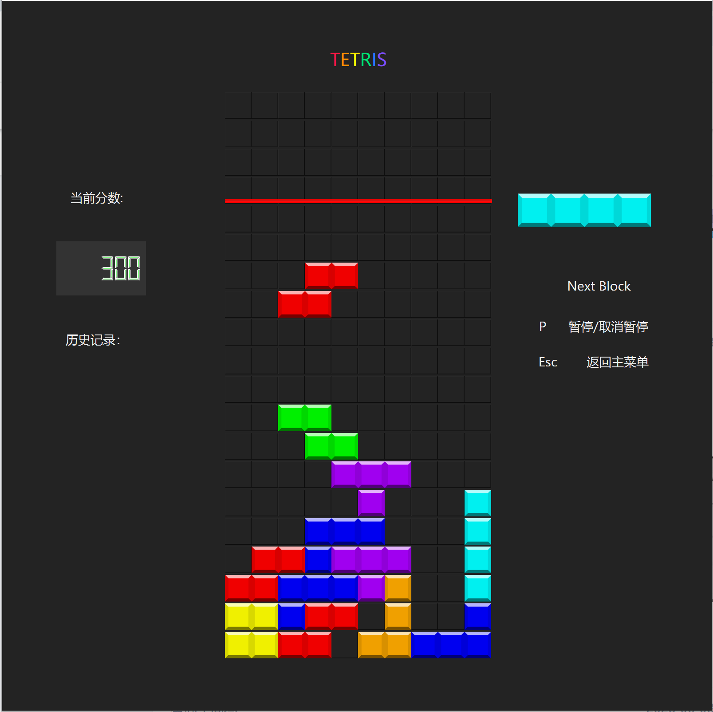
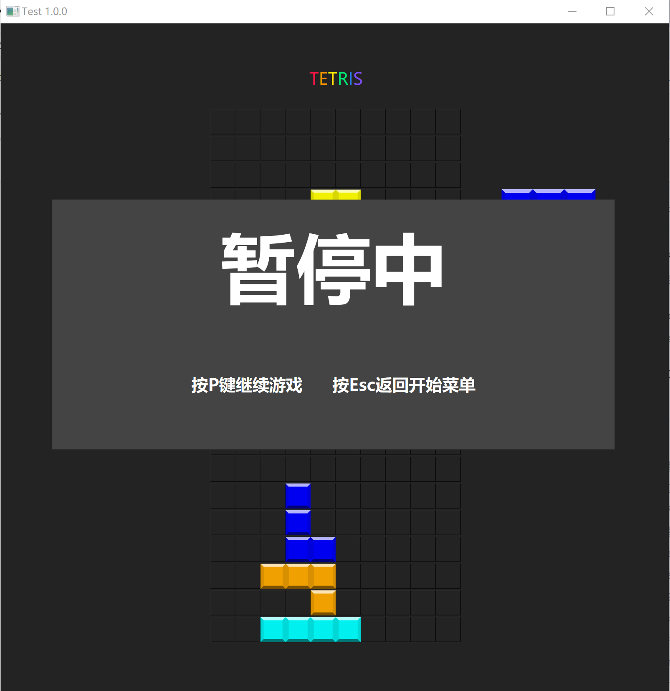
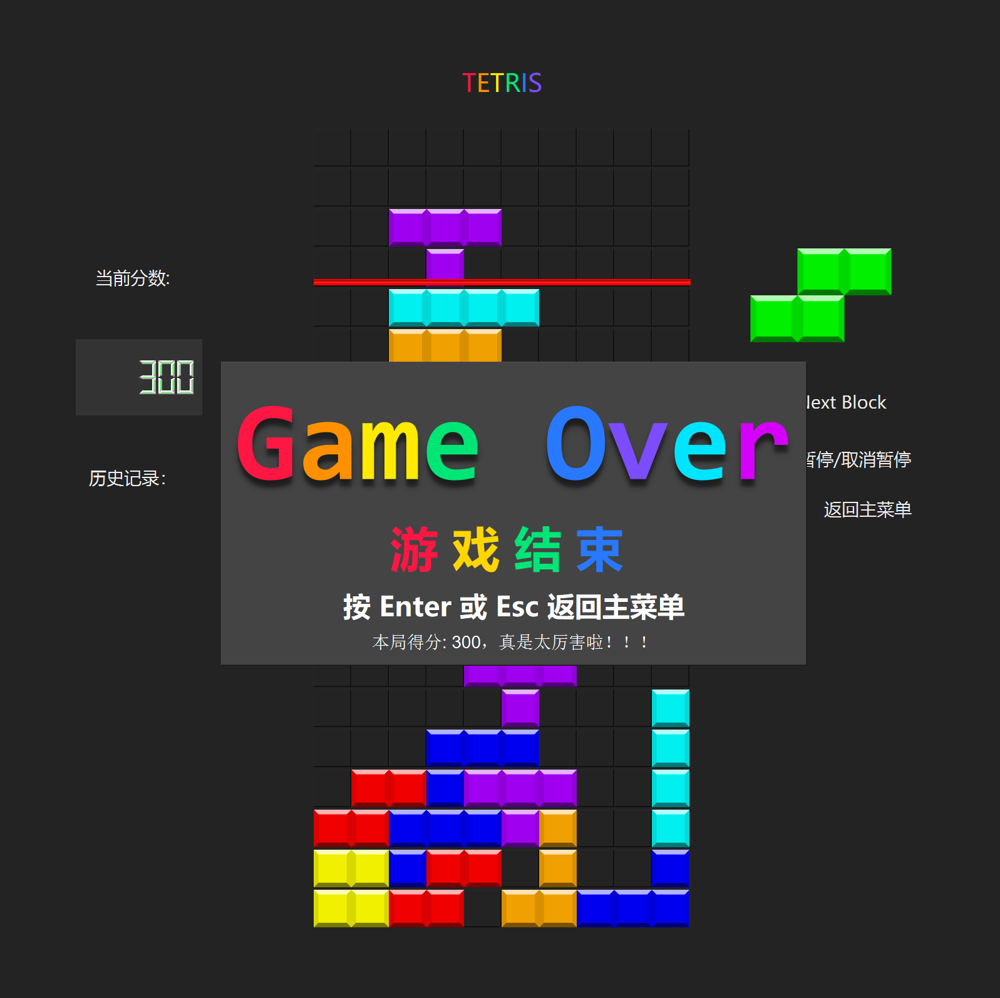
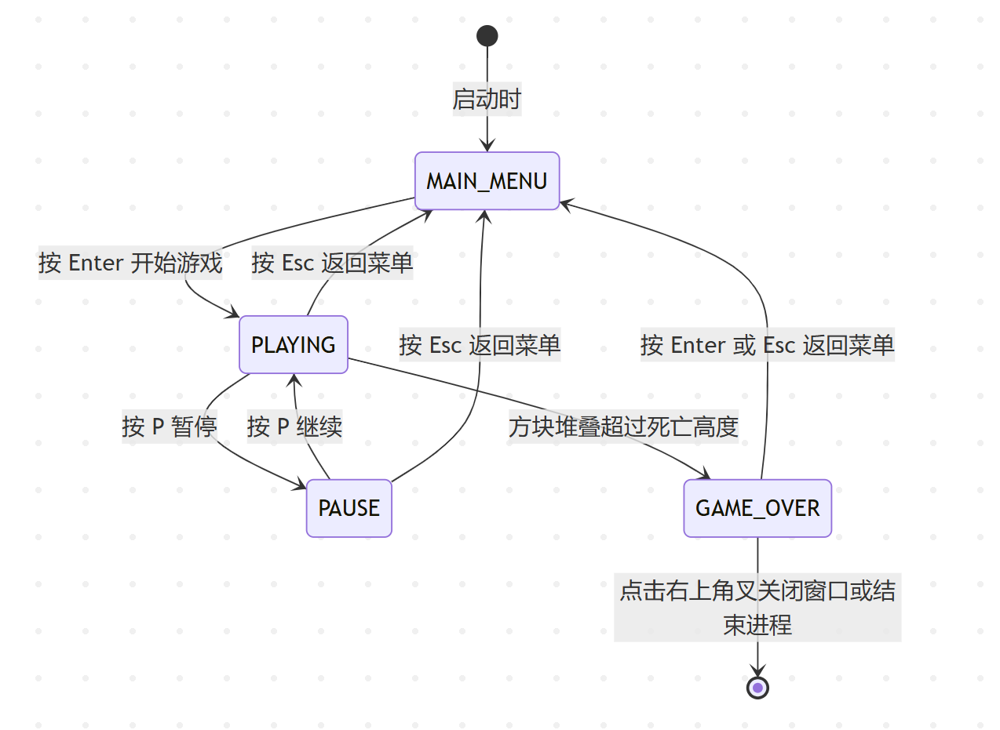
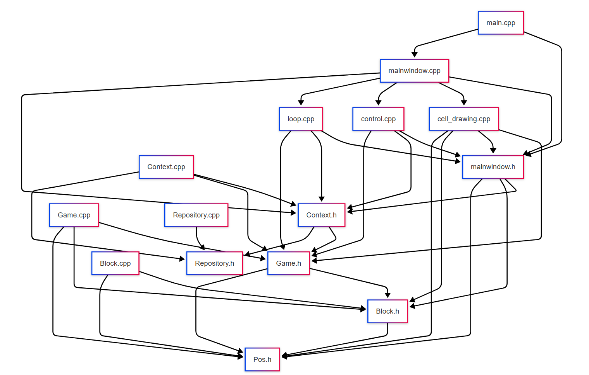

本文档旨在对基于C++和Qt框架开发的图形化俄罗斯方块游戏项目进行全面而深入的概要设计说明。
该项目是一款功能完备的桌面端俄罗斯方块游戏。其核心功能包括：
本俄罗斯方块游戏采用现代简洁的界面布局，深色背景突出游戏内容，提升玩家视觉体验。界面设计要素详述如下：
深色主题突出彩色方块，降低视觉疲劳，提升专注度。 彩虹色大标题和丰富颜色增强界面活力。 操作提示直观清晰，用户易于上手。 样式风格保持统一，保证良好美感和一致性。
初始状态显示“TETRIS”大标题及“俄罗斯方块”副标题。 提示“按下Enter以开始游戏”。 详细列出控制键说明：“←→ 或 A/D 左右移动”，“↑ 旋转”，“↓/Space 立刻下落”。 效果示例：
游戏标题：界面顶部中央用彩色字体显示“TETRIS”，突出游戏品牌感。 游戏棋盘：正中央为主要操作区，方块以不同颜色显示。 分数显示：左侧区域有“当前分数”和“历史记录”，采用数码管风格字体，提升科技感。 下一个方块预览：棋盘右侧，实时显示下一个将要出现的俄罗斯方块。 操作提示：右侧清晰列出操作说明（如“P 暂停/取消暂停”、“Esc 返回主菜单”）。 整体布局：信息分区明确，操作直观，便于玩家快速上手。 效果示例：

游戏暂停时在中央弹出半透明遮罩。 显示大号“暂停中”字样，下方有明确恢复/返回提示（“按P键继续游戏”、“按Esc返回开始菜单”）。 背景棋盘和方块依然可见，不过逻辑暂停。 效果示例：

游戏终止时中央弹出深色提示框。 用彩色大字显示“Game Over”与中文“游戏结束”。 提示可按Enter或Esc返回主菜单，并显示本局得分及鼓励语句（如“本局得分：300，真是太厉害啦！！！”）。 效果示例：

本项目的俄罗斯方块游戏严格按照状态机模型组织整体流程，确保各界面及操作间转移清晰、稳定，便于维护和扩展。

游戏核心状态可分为以下几类：
流程单一、状态切换明晰，无多余嵌套，便于后续增加如“设置”、“高级排行榜”等附加功能。 状态间切换全部由显式的用户输入触发，防止误操作。 暂停、菜单、游戏结束等状态均用弹窗遮蔽棋盘，确保交互专注、界面规
本游戏采用了一种典型的面向对象的组件化设计，其结构可以看作是模型-视图-控制器 (MVC) 模式的变体。
Game 类、Block 类和 Pos 等数据结构组成。Game 类封装了游戏的所有核心规则、数据（如棋盘 game_board）和逻辑，独立于任何UI展示。MainWindow 类及其关联的UI文件 (ui_MainWindow.h) 构成。它负责将模型中的数据以图形化的方式呈现给用户。cell_drawing.cpp 中的函数专门负责将游戏棋盘数据渲染到UI组件上。MainWindow 类的事件处理部分 (control.cpp) 和游戏循环逻辑 (loop.cpp) 中。它接收用户的输入（键盘事件），并调用模型的方法来更新游戏状态，同时通知视图刷新显示。此外，引入了 Context 类作为状态管理器，它持有模型 (Game) 和游戏整体状态 (Status) 的实例，在控制器和模型之间起到了重要的协调作用。
以下流程图直观地展示了游戏的核心逻辑流程，特别是玩家的一次操作（如移动、旋转）在系统内部的实现。
图解:
MainWindow::keyPressEvent 接收到事件，并调用 Game 类中对应的尝试移动方法（如 tryMoveLeft）。Game 类检查该移动是否有效 (isValidAction)。如果有效，则更新 current_action 中的方块位置 (anchor)。syncBoardAndActionToUi，该函数会清空旧位置的方块，并在新位置重新绘制，从而完成视图的更新。Block, Pos, Action)MainWindow, main.cpp)作为应用的核心，MainWindow 类承担了视图和控制器的双重职责。
main.cpp 是程序的入口，它创建了 QApplication 和 MainWindow 的实例，并启动了Qt的事件循环。MainWindow 的构造函数负责初始化UI组件、设置窗口样式（如深色模式）、连接信号与槽（特别是 QTimer 的 timeout 信号到 onTimeOut 槽函数），并隐藏初始状态下不需要的菜单（如游戏结束菜单和暂停菜单）。cell_drawing.cpp），如：
setCellColor: 设置棋盘上单个单元格的颜色或图片。setNextBlockWidget: 更新“下一个方块”预览区的显示。setScoreWidgetNumber: 更新分数显示。syncBoardAndActionToUi: 核心渲染函数，遍历整个 game.game_board 和当前的 current_action，将游戏状态完整地绘制到屏幕上。syncMenuStatusToUi 函数根据 context.status 的值，智能地显示或隐藏主菜单、暂停菜单和游戏结束菜单。Context)Context 类是一个高级状态容器，它将游戏的核心组件聚合在一起，简化了状态的管理和传递。
Status status: 一个枚举类型，定义了 MAIN_MENU, PLAYING, PAUSE, GAME_OVER 等多种游戏状态。Game game: 游戏逻辑核心的实例。Repository repository: 数据持久化对象的实例。reset() 方法能将游戏恢复到初始状态，包括重置游戏棋盘、分数、游戏状态标记，并重新生成方块。这在重新开始游戏或从游戏结束返回主菜单时至关重要。Game)Game 类是整个项目的引擎，它实现了俄罗斯方块的全部玩法规则，并且与UI完全解耦。
game_board: 一个 std::array<std::array<std::optional<char>, game_width>, game_height>，是游戏棋盘的内存表示。std::optional<char> 精妙地表示了“这个格子为空”或“这个格子被某个方块占据”。current_action: Action 结构体实例，保存了当前正在下落的方块 (block) 及其在棋盘上的位置 (anchor)。next_block: std::unique_ptr<Block>，指向下一个将要出场的方块。使用智能指针有效地避免了内存泄漏和悬空指针问题。score: 记录当前分数。m_is_game_over: 一个布尔标志，用于标记游戏是否结束。spawnNewBlock: 当一个方块固定后，此方法被调用。它将 next_block 移动到 current_action，然后生成一个新的 next_block。同时，它会检查新生成的方块是否一出现就与已有方块重叠，如果是，则游戏结束。isValidAction: 这是一个关键的碰撞检测函数。它检查一个给定的方块在指定位置是否合法（即没有超出边界，也没有与已固定的方块重叠）。tryMoveLeft(), tryMoveRight(), tryRotate(), moveDown() 都依赖 isValidAction 来判断操作是否可以执行。placeCurrentBlock: 当方块无法再下落时，此方法将其“固化”到 game_board 中，即将方块的 label 写入棋盘对应的格子。clearFullRows: 检查棋盘中所有行，如果某行被完全填满，则消除该行，上方的所有行下移，并根据消除的行数增加分数。control.cpp)这部分代码专门处理用户交互。
keyPressEvent: 这是 MainWindow 中重写的事件处理函数。它使用一个 switch 语句来根据当前的 context.status 决定如何响应按键。PLAYING: 响应 W/A/S/D 和方向键来移动和旋转方块，Space 用于硬着陆，P 用于暂停，ESC 用于退出。PAUSE: P 或回车键恢复游戏。MAIN_MENU: 回车键开始游戏。GAME_OVER: 回车或 ESC 返回主菜单。syncBoardAndActionToUi 来刷新屏幕，为玩家提供流畅的操作体验。loop.cpp)这是驱动游戏自动进行的核心。
onTimeOut: 该函数与 QTimer::timeout 信号连接。每次被调用时，代表一个游戏“滴答”(tick)。isGameOver()，如果游戏已结束，则更新状态并返回。game.moveDown() 尝试使方块下落一格。moveDown 返回 false），说明方块已触底。placeCurrentBlock() -> clearFullRows() -> spawnNewBlock()。placeCurrentBlock 和 spawnNewBlock），都会再次检查 isGameOver()。syncBoardAndActionToUi 更新界面显示。Repository, QSettings)Repository 类: 设计上用于处理文件的读写，定义了 read 和 write 接口，但从代码实现来看，实际的持久化功能由 QSettings 完成。QSettings: 在 mainwindow.cpp 中，saveHistoryScore 和 loadHistoryScore 函数使用 QSettings 来在本地保存和读取历史最高分。QSettings 是Qt提供的跨平台持久化存储方案，比直接读写JSON文件更简单方便。
| 源文件 | 源文件说明 | 函数 | 功能+参数+返回值 |
|-------------------|------------------|-------------------|-------------------------------------------------------------|
| Block.h/.cpp | 方块描述模块 | getBlockByLabel | 通过label查找方块类型 (label: char) → Block引用 |
| | | rotate | 方块顺时针旋转 (无参数) → Block指针 |
| | | Block构造/成员 | 支持各属性初始化 (label, color, occupied, anchor) → 见声明 |
| Pos.h | 坐标结构体 | operator重载 | 坐标加减与比较 (另一个Pos) → Pos、bool |
| Game.h/.cpp | 游戏主逻辑 | reset | 重置游戏状态和数据 (无参数) → 无 |
| | | tryMoveLeft/Right | 方块向左/右移动一格 (无参数) → bool |
| | | tryRotate | 当前方块旋转 (无参数) → bool |
| | | moveDown | 下移一格/检测落地 (无参数) → bool |
| | | placeCurrentBlock | 固定方块到棋盘 (无参数) → 无 |
| | | clearFullRows | 消除满行并计分 (无参数) → 无 |
| | | isGameOver | 是否结束 (无参数) → bool |
| | | spawnNewBlock | 生成下一个并切换当前方块 (无参数) → 无 |
| | | setCurrentBlock | 设置活动方块及位置 (Block指针, anchor) → 无 |
| Context.h/.cpp | 游戏上下文 | reset | 重设场景和仓库 (无参数) → 无 |
| Repository.h/.cpp | 持久化接口 | read/write | 读写持久化数据 (无参数) → 无 |
| | | reset | 重设数据存储区 (无参数) → 无 |
| mainwindow.h/.cpp | UI主窗口 | MainWindow构造/析构 | 初始化UI/刷新/连接信号 (parent等) → 无 |
| | | sync...系列 | 同步棋盘、菜单、分数、下一个方块等 (无/相关参数) → 无 |
| | | setCellColor | 设置单元格颜色 (位置, 颜色) → 无 |
| | | keyPressEvent | 处理键盘事件 (QKeyEvent*) → 无 |
| | | onTimeOut | 定时主循环、自动下落 (Context&) → 无 |
| control.cpp | 主输入响应 | keyPressEvent | 处理不同游戏状态下的键盘事件 (QKeyEvent*) → 无 |
| | | keyReleaseEvent | 按键释放事件 (QKeyEvent*) → 无 |
| loop.cpp | 主循环处理 | onTimeOut | 自动下落、锁定、新块、同步显示 (Context&) → 无 |
| main.cpp | 程序入口 | main | 初始化Qt应用和主窗口 (argc, argv) → int |
while (游戏状态 != GAME_OVER) {
if (到达时间间隔) {
if (游戏已结束) {
状态设为 GAME_OVER
刷新显示
} else {
if (方块能下落) {
当前方块向下移动一格
} else {
固定方块到棋盘
if (游戏已结束) {
状态设为 GAME_OVER
刷新显示
} else {
检查消除满行
加分
刷新分数显示
生成新方块并展示
}
}
}
刷新棋盘显示
}
}
on keyPressEvent(event):
switch(当前状态):
case MAIN_MENU:
if 回车: 状态->PLAYING, 启动游戏主循环
case PLAYING:
if P: 状态->PAUSE, 暂停计时器
if ESC: 状态->MAIN_MENU, 游戏重置
if 左/右键: 方块尝试移动
if 上键/旋转键: 方块尝试旋转
if 下键/空格: 方块持续下落至底、锁定
case PAUSE:
if P/回车: 恢复游戏
if ESC: 状态->MAIN_MENU, 游戏重置
case GAME_OVER:
if 回车/ESC: 状态->MAIN_MENU, 游戏重置
rotate(block):
for 每个已占用单元格pos:
计算相对锚点(x, y)
新位置 (锚点.x - (pos.y - anchor.y), 锚点.y + (pos.x - anchor.x))
生成新 Block 返回
isValidAction(block, anchor):
for block.occupied:
转成棋盘坐标
若越界或被占用 return false
return true
该俄罗斯方块项目展现了一个结构清晰、功能完备、代码健壮的软件设计。通过将UI、游戏逻辑和状态管理进行有效解耦，项目变得易于理解、扩展和维护。智能指针的广泛使用、基于状态机的事件处理以及高效的算法选择，共同构成了一个高质量的桌面游戏应用。本文档对该设计的深入剖析可为后续所有相关工作提供坚实的基础。